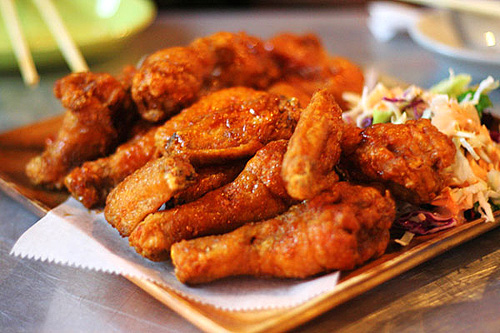

Gà chiên dừa

- Khẩu phần 6
- Chuẩn bị phút
- Thực hiện 30 phút
Nguyên liệu
- 500g ức gà/ đùi gà lóc xương và da
- 60g bột chiên giòn
- 100g bột chiên xù
- 100g dừa nạo trắng
- 1 muỗng café bột tỏi
- 1 muỗng café hạt nêm
- ½muỗng cafe tiêu
- ½ muỗng café muối
Hướng dẫn thực hiện
- Gà cắt thành miếng nhỏ vừa ăn, ướp chút muối tiêu, đường, hạt nêm để 10p
cho thấm.
- Đánh trứng gà & bột mì cho tan đều, trộn bột chiên xù và dừa nạo trắng.
- Nhúng từng miếng gà vào tô trứng và bột mì, sau đó cho vào tô bột chiên
xù và dừa nạo áo đều bên ngoài lần lượt cho đến hết
- Bắc chảo dầu lên cho nóng, cho từng miếng gà vào chiên vàng (chiên ngập
dầu)
- Làm xốt dừa: phi tỏi, hành, sả xay cho thơm, cho tương bơ đậu phộng + 1
ít nước đun sôi hỗn hợp, nêm ít nước tương , đường, hạt nêm cho vừa ăn rồi
đổ ít nước cốt dừa vào
- Ăn kèm với xốt dừa